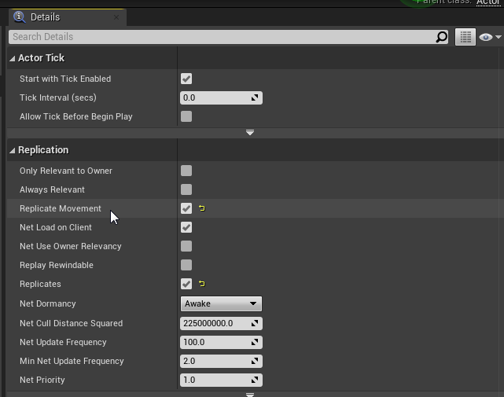
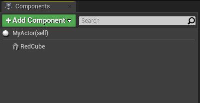

Actor Movement and Physics Replication
In the last page we learned about the basics of replicating an actor, however we ran into an issue where the physics doesn't replicate.
If you paid attention to the different options presented on the details panel for actors, you may have noticed there is also an option called "Replicate Movement". Depending on what kind of actor you will have, this isn't always necessary but this can automate a lot of the process for us, and is also necessary if we want accurate physics replication. If you haven't found the option this is where it is located in the details panel:

Now this may seem really easy, however there is a few things to note when using "Replicate Movement".
Firstly, it is usually good to avoid replicating movement if it is not necessary, as replicating movement uses more bandwidth as the server has to constantly update all the clients on the position and rotation of movement replicated actors. In most situations it is usually possible to avoid it unless you are specifically making a physics replicated actor.
Other actors, like for example if you have a door that you want to open and close, you can just have enable movement replication to do the work for you, however the movement won't be very smooth on clients and it will use unnecessary bandwith that we can save by using another method.
For example, if we want to open a door, it would be better practice to just enable "replicates" for the door, and when the server opens or closes the door, it can just send a queue to the clients in the form of a multicast to open or close the door. That way all the server has to do is tell the clients that the door is opening, rather than constantly updating them with unnecessary transform and rotation information that the clients could handle themselves.
However for the case of this example we will enable it as I will want physics replication for the cube.
There is one important thing to note though when doing physics replication, or using "Replicate Movement" at all.
In order to use physics replication on an object, the object has to be the root of the actor. For example it would look like this:

For my cube actor, we can see that the static mesh which is named "RedCube" is the root of the actor. It is really important to know that actors in Unreal Engine usually will come with "DefaultSceneRoot" as the root, which will break physics replication. If you run into this problem all you would need to do is replace the default root with the object that you want to have physics replication for.
This is all for movement and physics replication though, continue to the next page to learn about replicating variables!